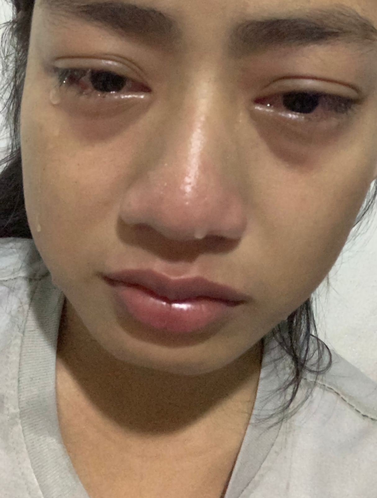
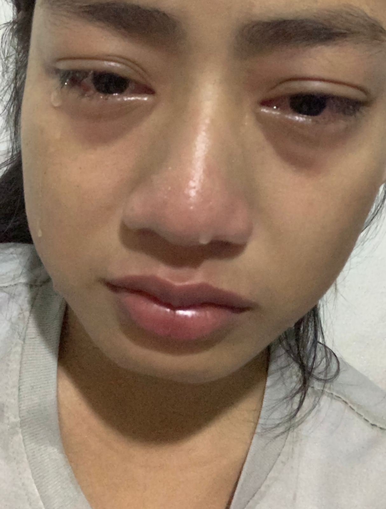

Hallooooww Sayaaanggg
Di halaman ini, aku menyimpan namamu dan semua rasa yang datang bersamanya.
Bersamamu, hal sederhana menjadi istimewa.
Jika cinta adalah perjalanan, aku bahagia karena kamu adalah tujuannya.
Lopyuuu Sayaangg :)
.jpg)
Di halaman ini, aku menyimpan namamu dan semua rasa yang datang bersamanya.
Bersamamu, hal sederhana menjadi istimewa.
Jika cinta adalah perjalanan, aku bahagia karena kamu adalah tujuannya.
Lopyuuu Sayaangg :)
Jarak mungkin menjadi awal cerita kita, namun rasa ini tumbuh tanpa pernah bertanya tentang seberapa jauh langkah yang harus ditempuh. Di halaman ini, aku menuliskan namamu sebagai pengingat bahwa hati tidak pernah mengenal jarak.
Aku belajar bahwa cinta jarak jauh bukan tentang menunggu tanpa kepastian, melainkan tentang percaya, saling menjaga, dan memilih bertahan meski dunia menawarkan banyak alasan untuk menyerah.
Di halaman ini ada foto pertama yang kamu kirim ke aku.
Lucu banget tiba-tiba kirim foto ehehe.
Tapi gapapa kalo kamu ga ngasih foto itu mungkin aku ga berbunga-bunga,
dan pelan-pelan ada rasa dag dig dug ser di hatiku ehehehe.
Cantiqq amat neng cewe siapa sih😗
 

Lucu bangett nangisnyaa ♥🥰
Kamu cantik seperti lagu ini😘
Setiap dengerin lagu ini pasti ke inget sama kamu.
Lagu ini udah ada penunggunya, kamu.
Aku harap kamu selalu jadi penunggunya♥
Di perjalanan yg panjang ini, jangan jadi milik siapapun dulu ya?
Indah adalah kata dan kamu adalah wujudnya.
Tidak apa-apa jalannya susah, asalkan puncaknya itu kamu.
Selalu butuh waktu yg lama untuk mendapatkan sesuatu yg indah.
Di ceritaku yg membosankan ini, semoga kamu betah jadi tokoh utamanya.
Jika hidup adalah sebuah buku, maka bertemu denganmu adalah bab favoritku.
Mungkin itu semua ungkapan hati yang sulit diungkapkan dengan kata-kata.